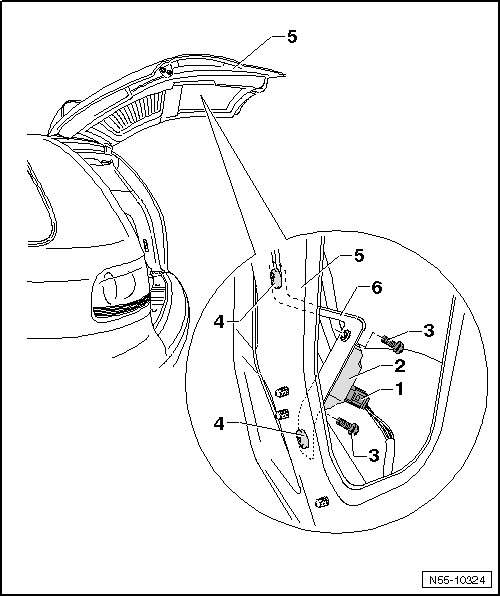

Vehicle Inclination Sensor
Rear Lid
Vehicle Inclination Sensor
Removing

- Remove the rear lid trim panel.
- Remove the bolts - 4 -.
- Remove the vehicle inclination sensor - 2 - and bracket - 6 - from the rear lid - 5 -.
Installation
• If the rear lid does not open all the way, then either the inclination sensor or the bracket is not installed correctly.
• The inclination sensor the bracket must be installed in the position illustrated.
- Make sure the inclination sensor connector - 1 - is connected securely.
• The inclination sensor - 2 - is attached to the bracket - 6 - in the correct position.
- Tighten screw - 3 -. Tightening specification: 6 Nm.
- Install the bracket - 6 - into the rear lid - 5 - as illustrated.
- Tighten screw - 4 -. Tightening specification: 8 Nm.
- Always perform a basic setting if the inclination sensor - 2 - was removed or replaced, or if the connector - 1 - was disconnected.